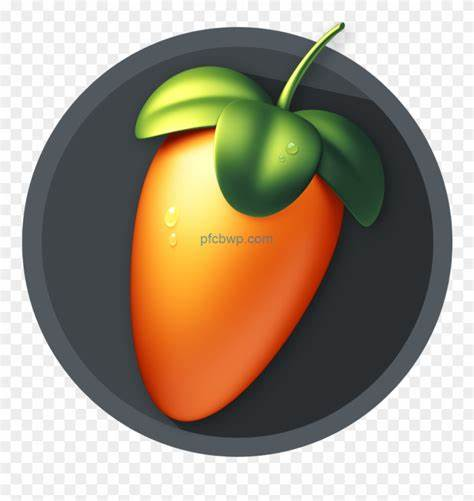

Creative audio work
Using music production and DJ work as another way to build, refine, and share creative ideas.
Music is one of the longest-running creative parts of my background. This section brings together DJ mixes, music production experiments, and audio-focused work that reflects the same hands-on mindset seen across the rest of the portfolio.

Background
How music fits into this portfolio
Music production gives me a different kind of creative workspace. It combines rhythm, structure, technical tools, and experimentation in a way that complements my work in software, game development, and other project-based learning.
DJ Practice
Building mixes and transitions through active listening, timing, and live-set preparation.
Production Workflow
Using digital audio tools to sketch ideas, remix tracks, and improve arrangement and sound design habits.
Creative Discipline
Applying consistency, iteration, and attention to detail across both technical and artistic work.
Tools and setup
Main tools I use for music work
Production
FL Studio is my main environment for composing, experimenting with ideas, and building remixes or original arrangements.
DJ Workflow
I use a Pioneer DDJ-400 with Rekordbox for mixing practice and event-ready sets when opportunities come up.
Latest music posts
Mixes, embeds, and music-related updates
Most published mixes are shared through Mixcloud, while this page keeps the portfolio-side updates in one place.
Contact
Interested in the creative side of my work?
You can explore the rest of the portfolio or reach out directly if you want to connect about creative projects, collaboration, or technical work that overlaps with media and audio.